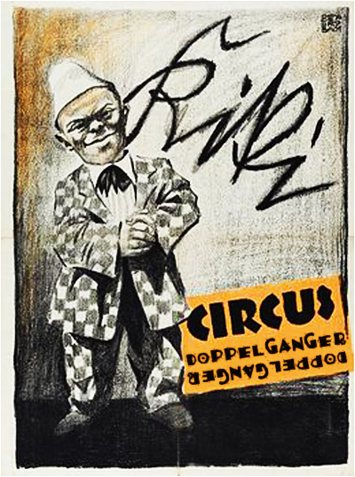
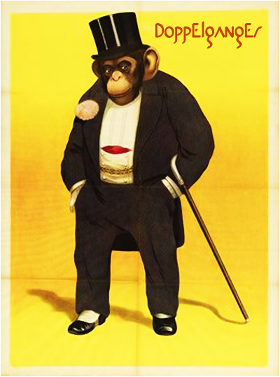
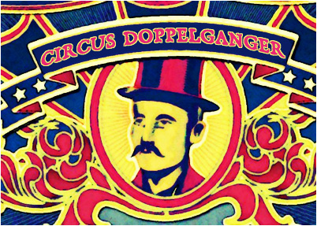
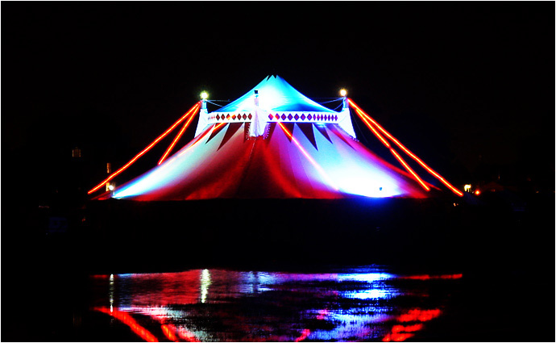

| |
 |
 |
| |
 |
Ден 5 |
|
| |
|
|
Ален Корбин, детектив:
Петтиот настап на Мудрите Јарци поминува во знакот на Децата од Гума кои за време на говорот се шетаат во трибините и се трансформираат во најразлични облици (октопод, џиновска богомолка, суштество што наликува на саксонскиот Грендел, па и во мини-Годзила), одвлекувајќи го вниманието на публиката. Истата вечер во македонската блог заедница се појавува статија што ги величи децата и остро ги критикува „извиканите тревопасци, со муцката влезени длабоко во нивните га*ови“. Целата ситуација претставува еден вид на флешбек од 2001-ва кога Децата од Гума преку ноќ ги засениле Мудрите Јарци, користејќи се со низа валкани трикови (вокални појачала, трепкачки рефлектори, златни пуканки, па и лаксативи подметнати во сеното на јарците). Самовилата се појавува за миг во говорот на јарците, но сепак, Џуџето е актерот на кој тие се фокусираат оваа вечер.
КЛОВНОТ: Блажени дами и господа, како што гледате, јас сум само обичен кловн, ни помалку ни повеќе човек од вас. Нели... Кога ќе го напуштите нашиот сакан циркус, вие нема ни за секунда да помислите на мене. Не, нема шанси да ви недостасувам, што и да кажете сега. Од друга страна, не верувам дека тоа е случајот и со нашите следни ѕвезди, светски познатите, насекаде саканите, Мудри Јарци! (ракоплескање)
ДЕСНИОТ ЈАРЕЦ: Бле... Блееме во дооолг-долг ходник со два краја. (пауза и шепот во публиката, се слуша: Го разбра? Што кажа?) На секој крај по една блескаво жолта метална врата. (срамежлив аплауз) Наоколу ѕидови од бела фасадна цигла осветлени со шипкасти неонки, а во средина, искачен на кристален пиедестал, стар црнец што свири тажно на саксофон. Ништо друго. Две врати, ѕидови и еден свирач. Се наоѓаме пред старецот; тапкаме со копитцата во ритам... шуби-дуби... Го прашуваме, „Која е вистинската насока, Мајлс, стар хуманоиден пријателе? Таа лево или таа десно?“ Но, тој само продолжува да дува во металната убавица додека по образите му течат солзи.
ЛЕВИОТ ЈАРЕЦ: Поткашлуваме... кх-блее, кх-блеее.. и со љубезен тон, саде шлаг и јагоди во нашите кротки грла, го прашуваме пак. (погласен аплауз) Тој за миг се наведнува во една насока, па во друга, и на крај се извива напред како змија во пискавиот плач на саксофонот. Се смееме за миг...
Д.Ј.: ...но не ни е до смеење... Зад вистинската врата се наоѓа сето она што отсекогаш сме го сакале, за кое сме се колнеле во нашиот јарешки квазибог со ноќи по ред, за кое сме сонувале будни сред најгустите гужви на свет... А, имаме само една единствена шанса за избор! Утка и се паѓа во вода, нема назад...
Л.Ј.: Која врата ќе ја избереме и зошто? Левата, затоа што не е десна или десната затоа што не е лева? (се слуша женски глас: Види, Перо, види!)
Д.Ј.: Велат најдолгиот последователен временски период во човечката историја врз основа на кој можеме да вадиме заклучоци е период на интелектуална и морална темница... (аплауз, се слуша: Сликај ги, како го прават тоа? Чекај, октопод е ова? Не бе, богомолка!)
Л.Ј.: Ах, тоа се Децата од Гума...
Д.Ј.: За момент помислив дека почнале да ни растат втор пар рогови. Кловнот сигурно би кажал, „Имате по четири коски на главата, многу интересно. ДА, ќе делува апсолутно фантастично на постер! Слушајте го ова: Јарците со 4етири Рогови! исто така познати како Мудрите Јарци. Луѓе ќе се ложат од тука до Камчатка!“ (аплауз, се слуша: Годзила, бе!) Ова ме потсетува на прашањето: кој кого контролира? Кловнот – Партизанот или обратно? Или и двајцата ги контролира Каубоецот?
Л.Ј.: Еве го Кловнот, конечно. Ќе се обиде да ги тргне Децата, не дека ми сметаат... (аплауз, се слуша: Буу! Што кловн ќе беше...) Кога никој не слуша, можеме да зборуваме за што сакаме, дрвото нема никогаш да падне туку ќе прерасне во анти-дрво-земјотрес по падините на Лос Анѓелес, можеби орангутан или некаков Чарлтон Хестон во емисија за шимпанза... Или Библија во рацете на Дарт Вејдер, „Овој Господ би бил одличен Сит... ххк-кхххх...“ Можеби зајак човекојадец изгубен на Велигденските острови, „Ова не е фер, конкуренцијата е страшна...“ (се слуша: Бууу!)
Д.Ј.: Кловнот е ифрит лут денес, ѕвечарка би збришала што подалеку од него. Вчера, таман пред легнување, Каубоецот му се јавил од полициска станица да го извести дека Џуџето е уапсено за палење маси со напалм во некоја кафана. Претпоставувам сте го виделе нашето мило циркуско Џуџе што понекогаш се маскира во шимпанзо? (се слуша: Она нервозното леприконче?) Интересно, некој се уште прати... Да, малку нервозно е – тоа со кафаната не е ништо ново. Пред пар месеци, на пример, го запали шаторот на Катон, асистентот на Камшикарот... со лупа... иако беше облачно! Ако тоа не е посветен пироман, не знам што е...
|
|  |
Л.Ј.: Пред да дојде во Допелгангер, Џуџето градело подземни куќи за богаташите во Цирих. „Топ да пука, они ќе останат цели, гарант.“ Џуџето е исто така извонреден шахист – го викале Боби Фишер иако вистинско име му е Кики. Едно време мислев дека сите џуџиња се добри шахисти ама потоа сфатив дека како и убедувањето дека сите џуџиња се грди и злобни мајмуни – едноставно не е точно. Имаме играно против него повеќе пати и губиме редовно, ама навистина не знам зошто и како. Би сакал да кажам дека игра расипано, и навистина збори нон-стоп („...така, на крај, волкот слатко се најал со тоа седумте јариња, чича-мича-готова-прича...“) плус секогаш мораме да играме на неговата табла („Само 64 полиња на вашата, ц-ц-ц...“), ама не знам ни зошто воопшто играме со него кога не ни дава да користиме топови („Јаа, 16 фигури, како не...“)... (се слуша: Еј, абе децана се враќаат...)
|
|  |
Д.Ј.: Веднаш после повикот, го видовме Кловнот како шиба во Кловнмобил крнтијата заедно со Камшикарот, и две секунди зад нив Брус Ли на својот точак. „Она прцулче Џуџето пак го уценува нашминканиот,“ зевна Мечката од својот кафез и продолжи да ја сонува пандата Јанг Линг. Почекавме некое време пред циркуската порта (не бевме сами, некој скитник клечеше подолу на тротоарот, без било каква видлива причина), ама стигна два по полноќ и никој се немаше вратено, па тргнавме назад кон леглото. Сабајлево, додека го тестираше своето џудо врз новиот крокодил (позајмен од тукашната зоолошка градина, симпатично суштество, пријатен карактер), Камшикарот ни раскажа што се случило во станицата...
Л.Ј.: Џуџето го однеле под лисици во некој градски ѕид. Полицајците биле пијани и на пат до станицата, марицата замалку ќе се превртела на пар кривини. Шефот на ноќната смена бил единствен трезен и можеби затоа бил страшно лут кога Џуџето почнало да им се заканува на сите полицајци дека ќе им ги скине грлата со долгиот нокт од малиот прст на левата рака. Каубоецот пробувал да ја смири ситуацијата, објаснувајќи дека Џуџето е странец и затоа заштитено со пар милиони конвенции, ама полицајците не разбирале англиски па го однеле до чекална и љубезно го седнале на фотеља од евтин сунѓер. Тука негде во станицата донеле и некој дечко што немал лична карта, ама затоа имал свежа модрица по левото око... (се слуша: Хах, не ми се верува...)
Д.Ј.: Изгледот на дечкото веројатно му дало идеја на Џуџето, па тоа почнало да се млати себе наваму и натаму додека пијаните полицајци не почнале да се превиткуваат од смеење. На ова Шефот само мирно си го подместил каишот и отпил кафе, „Џабе везеш. Имаме камери.“ Џуџето пак почнало да пцуе, сега плукајќи крв со секој збор, правејќи лом по околните папки и документи... (се слуша: Се надевам нема пак да се исфрли кловнот...)
Л.Ј.: Кога стигнале Кловнот и неговата дружина, устата на Џуџето била запушена со мокра чорапа, а Шефот бил отиден до ве-це. Каубоецот за сево ова водел бележник во некој неразбирлив код, држејќи го лаптопот што подалеку од Брус Ли. „И што треба сега да правиме, полицајци мои мили, о гранитни столбови на оваа велелепна држава? Да ви ги тренираме мувите да фрлаат ласо?“ рекол Кловнот. „Туку, на таа чорапа не и е местото таму и тоа секој со добра полициска обука би морало веднаш да го знае. Тоа Џуџе, дами и господа, може да зборува и со газот, што е многу опасно ако тоа се реши на една таква очајничка мерка. Ако веќе има потреба од таа чорапа, запушете го долу.“ Со ослободена уста, Џуџето кажало нешто на некој развлечен пискав јазик што само Кловнот го разбрал...
Д.Ј.: ...Наеднаш, Камшикарот го удрило силно дежа-ву, вртејќи се наоколу низ правливата канцеларија, гледајќи во блескаво закрвавените белки на полицајците и нивните не така чисти униформи, мерејќи го дечкото со модрица на окото и насмевка на устата, буцкајќи го шареното палто на Кловнот од чија внатрешност во тој момент се појавило купче пари...
Л.Ј.: Тогаш Шефот светнал кај вратата и подместувајќи го каишот рекол, „Можеше барем маските да ги оставите во вашиот циркус, а? Ова не е фестивал за чудаци, туку полициска станица, да му се плукнам!“
Д.Ј.: На глетката на Шефот, машничката на Кловнот заиграла во место, а Камшикарот расчепатил уста во неверување. „Камшикарче мое мило, камшик да те одере, ми немаш кажано дека имаш брат близнак што има проблеми со бешиката.“ Камшикарот подголтнал, лице во лице со брклестата појава пред него, рефлексија од крв и месо. „Човекот е осуден да постои во свет што е до толку апсурден, што и слободата не е ништо друго туку осуда,“ рекол Камшикарот, извлекол матарка со виски и седнал до Каубоецот... (гласна смеа и аплауз за Децата од Гума)
Л.Ј.: Пак се вративме на истото... (смеата продолжува)
Д.Ј.: Мех, еден ден децата ќе се разболат од нешто што не можат да го контролираат и ќе се распаднат со првиот бран. Но, тоа не е наша работа... Туку и Шефот заприметил неверојатна физичка сличност со Камшикарот, па затоа без многу тегачење, пополнил пар документи со Кловнот, го погалил Џуџето по глава и кога Џуџето го гризнало за малиот прст, не реагирал... Кловнот бил фасциниран, „Би сакал да сум силен ко неговиот мал прст...“ Можеби тоа би било подобрување, знаеш? (смеата тука станува толку бучна што следните неколку пасуси се едвај разбирливи и на места ништо не се разбира од говорот на јарците, а меѓу другото се слуша: А што не зачепат јарциве?)
Л.Ј.: Шефот почнал да го распрашува Камшикарот, што е, од кај е, кога е роден, кои му се родители... Камшикарот возбудено одговарал на се, надевајќи се во некое делче од себе дека налетал на изгубен роднина, па и самиот му поставувал прашања на Шефот... Застанале до некое огледало и додека Кловнот и Џуџето правеле муабет на нивниот пискав јазик, додека Каубоецот и Брус Ли се бореле на раце, додека полицајците околу нив се занимавале со дечкото без лична карта, тие ги загледувале сите белези, бемки, израстоци, недостатоци и слично и во речиси се биле дупликати еден на друг...
|
|  |
Д.Ј.: ...Но постојат дупликати и дупликати. Шефот бил поинаков во еден битен аспект; тој имал фигуративен ’рбет каков што му недостасувал на Камшикарот, и тоа Камшикарот самиот го признава. Шефот раскажал: „Роден сум во Скопје и речиси цел живот го имам поминато тука, со некоја пауза до Љубљана или можеби Софија... но тоа и не е така битно. И од Рио де Жанеиро или Токио да сум – навистина сеедно е – градот во кој може човек да ужива е единствено оној во кој тој се наоѓа во дадениот момент. Дали го знам минатото на градот, дали сум го допрел неговиот пулс, неговите жилки и артерии? Е, тоа е битно. А сега, извини, мора да тркнам до ве-це...“
Л.Ј.: А кога се вратил од ве-це, Шефот продолжил: „Еве на пример, ако Скопје е величествен град, зошто толку малку луѓе тоа би го приметиле? Затоа што не верувам дека некој замислува да живее тука. Помисли на Фиренца, Париз, Лондон, Њујорк. Никој што ги посетува за прв пат не е вистински странец – тој веќе ги посетил во слики, романи, историски книги и филмови. Ако еден град не е употребен од страна на Уметникот, дури ни неговите граѓани не можат да се замислат во него. Каде е Скопје, да му се плукнам?“ Камшикарот на ова се воодушевил и решил да докаже дека е некако крвно поврзан со изненадувачки речитиот шеф, па набрзинка ги испратил Кловнот и останатите дома, притоа заблагодарувајќи му се срдечно на Џуџето за тоа што ја запалило кафаната...
Д.Ј.: Мислам дека и Шефот бил пијан кога сме кај тоа... Инаку, пред заминување, Каубоецот му кажал на Џуџето како да ја тужи станицата за физичкото малтретирање, „Што дека тие имаат камери кога ти ме имаш мене?“
Л.Ј.: Но, сево ова дотука не ја објаснува целосно лутината на Кловнот, само ја навестува... Она што Камшикарот не знае дека се случи вчера затоа што ја помина цела ноќ со Шефот, споредувајќи ги сложувалките на семејните стебла, е дека околу шаторот на Гатачката се собра многу народ, онака спонтано... (се слуша: Еј, види и Кловнот им се придружи!) Ех, сега и Кловнот си игра со децата, можеби сака да заборави на вчера затоа што ни утрето не ветува многу...
Д.Ј.: Ако не се сеќавате, или уште поверојатно ако не сте биле тука на вториот ден од Допелгангер претставите, да ви ги пополниме наративните празнини. Гатачката предвиде за престојот на циркусот во градов: „...Патот пред вас ве влече нагоре, ве понесува во спирала. На крајот ќе ви се чини дека сте свртиле во круг, но положбата нема да ви биде иста затоа што вие ќе бидете сите до еден значително променети, ваши сопствени двојници - огледалци. Секако, на Допелгангер не му се допаѓа таквата промена...“ Клучниот збор тука е „двојници“. Веднаш по враќањето на Кловнот, секаде низ циркусот, од Мечката до Расипаната Судијка, од Двоглавиот Јаким до Зед, од Децата од Гума до Золтан и Гризелда, се прошири веста за Шефот на полициската станица што е идентичен со Камшикарот. Предвидувањето на Гатачката почна да се остварува, а тоа значеше само едно – дека Допелгангер набрзо ќе се истури врз сите...
Л.Ј.: Инаку еве една од причините зошто мислам дека Кловнот сам по себе не е лош. Кога виде така уморен после долгиот ден дека Гатачката сака и нов говор да држи длабоко во ноќта, ко за пред спиење, тој дојде кај нас и побара услуга, „Јариња, јариња, знаете не можам се сам, ми треба одвреме-навреме и помош од некој во циркусов. Оние деца не се деца туку пифтии со мозочна супстанца што плаче за спас од своето тело... Ете, ако сте слушнале отсабајле бебешки плач, знаете сега од каде доаѓа. Не можам да се потпрам на нив. Туку, ај ве молам, отидете и видете што ујдурми спрема таа Гатачка затоа што ако се појавам лично, се плашам да не и го одгризам вратот пред сите. Вчера сонував дека го правам баш тоа и се уште ме држи арното од прекрасниот момент на катарза...“ Со други зборови, треба прилично добра волја за да се побара таква услуга од нас после се што се случуваше во последниве неколку месеци...
Д.Ј.: И отидовме кај Гатачката на мое противење. За што друго ќе се збореше ако не за принесување на жртви кон циркускиот шатор (кој по пат, ко цело време да се смешкаше громко во позадина)? А таму пред кабината, испоседнати наоколу сите подведливи низ циркусот, Децата од Гума таман на средина – за што и да се случи да се приклонат кон побучната сорта циркузанти. Седнавме до Мечката и таа промрморе, „Ме чеша шепата што ми фали, другар, ко се уште да ја имам...“ Мачките на Гатачката стоеја телохранителски пред својата газдарица, меѓу нив и оние на Самовилата кои како баш во нас да гледаа...
Л.Ј.: Гатачката се истегна во својата клацкалка, плукна тутун на страна и грмна само една единствена реченица: „И самите видовте дека нема заобиколување на неизбежното – ВРЕМЕ Е ДА СЕ ПРИНЕСЕ ЖРТВА!“ И тогаш, сите не зафати страшен ветер...
Д.Ј.: Песокот се крена кон небесата, некои шатори одлетаа богзнае каде, некои циркузанти се вкопаа во земја, а јас помислив, „Секогаш кога Гатачката дава говор се случува нешто бизарно. Може треба да и ја залепиме устата со фластер?“ но тоа секако го помисли Кловнот во мене...
Л.Ј.: Побрзај, медовината привршува...
Д.Ј.: Она брмчење и она прекршено блескање со кои Допелгангер и порано не сервираше пак беа во воздухот, само овој пат злобата беше осетлива: сите циркузанти завршија со некакви помали или поголеми изгребаници и повреди, дури и Гатачката... Кловнот имаше прилично причини да биде лут денес...
Л.Ј.: Но, нешто друго се случи со нас...
Д.Ј.: Ние не одлетавме никаде, не сетивме движење низ времето и просторот, ама без разлика, наеднаш се најдовме во ходник со два краја и џез свирач во средина... Имавме впечаток дека ходникот има некаква врска со Самовилата, дека изборот на едниот од двата краја ќе не одведе поблиску до неа... Но дали воопшто бевме таму или беше тоа само сон?
Л.Ј.: А загатката имаше решение, постоеше начин како да стигнеме до она што отсекогаш сме го посакувале... Блее...
Д.Ј.: Таман како што насмеани во муцките решивме конечно да се кренеме од дното и да дејствуваме кон височините... пред нас се појави Камшикарот...
Л.Ј.: „Време е за доручек...“
Д.Ј.: Дали сме тоа навистина слободни или тоа Сартр само си трескал?
|
|  |
| |
|
|